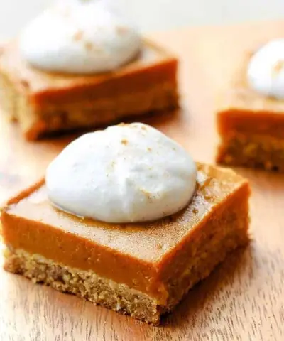

Vegan Pumpkin Pie Bars

Ingredients
- 1 cup gluten-free oats
- 1 cup blanched almond flour
- 1/4 cup raw almond butter
- 1/4 cup ground flax seed
- 3 tbsp organic maple syrup
- 1/4 tsp salt
- 3 cups pumpkin puree
- 1/4 cup coconut milk (full fat in can)
- 1/4 cup maple syrup
- 1/4 cup date sugar
- 2 tbsp arrowroot powder
- 2 tsp pumpkin pie spice
- 1/2 tsp salt
Steps
- Preheat oven to 350 F.
- Combine oats, almond flour, flax, almond butter, maple syrup, and salt in a food processor. Pulse until it becomes a crumbly texture.
- Line an 8 x 8 inch square pan with parchment paper. Press the crust evenly into the pan. Bake at 350 F for 20 minutes.
- While the crust is baking, combine the pumpkin puree, coconut milk, maple syrup, arrowroot powder, pumpkin pie spice, and salt in the food processor. Pulse to combine.
- When the crust comes out of the oven, allow it to cool. Then pour the pumpkin pie filling on top. Spread evenly. Lightly tap the pan on the counter to even out the filling and remove any bubbles.
- Bake at 350 F for 50-60 minutes. When the pie comes out of the oven it will need to cool completely. After allowing the pie to cool completely at room temperature, cover and transfer to the refrigerator and allow to set for at least 4 hours. If making this pie in advance allow to sit overnight. The more time you allow the pie to set the less runny it will be. Overnight works best.
- When the pie has cooled completely carefully pull the ends of the parchment paper to remove the pie from the pan. Using a sharp knife cut the ends off of each side creating a smooth finish. Measure 2.5 inches across the left side and bottom of the large square. Gently use a knife to measure across and over creating a grid on the top of the large square, then firmly press your knife on the lines to cut 9 even squares.
- Serve topped with coconut whipped cream and a sprinkle of pumpkin pie spice on top.
Recipe by Anjali Shah, from The Picky Eater. Saved here for personal use; the original has the full notes, tips and photos. Open original